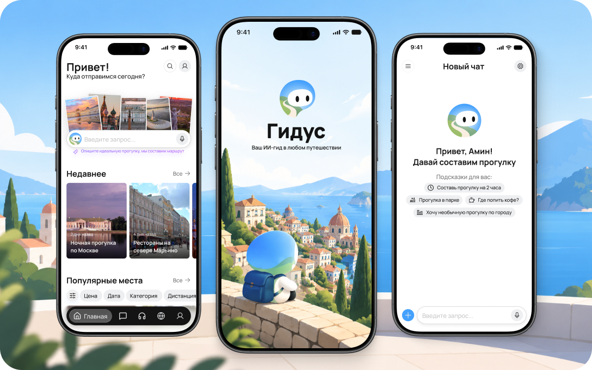
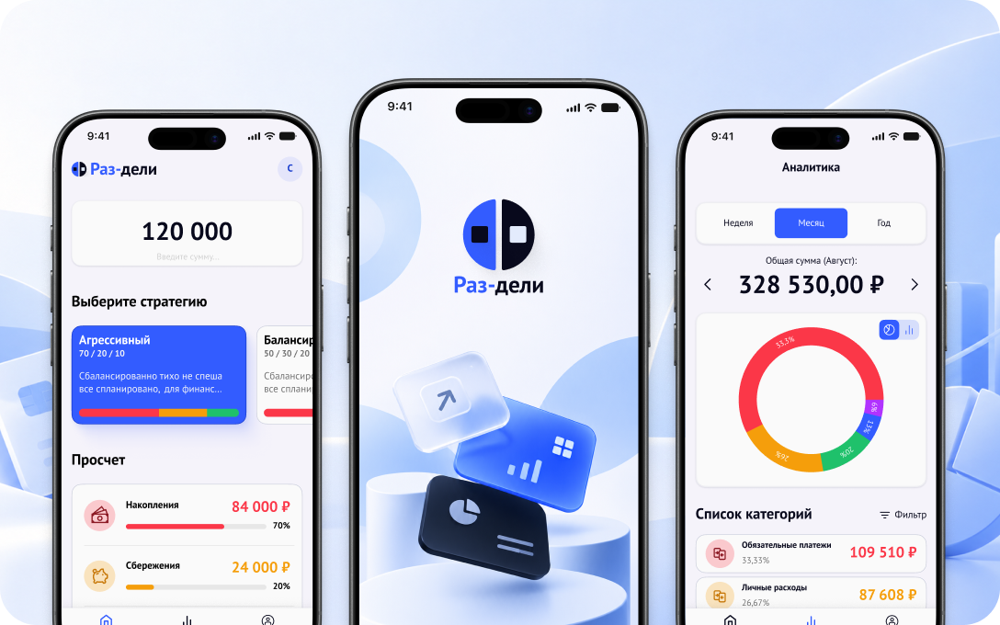
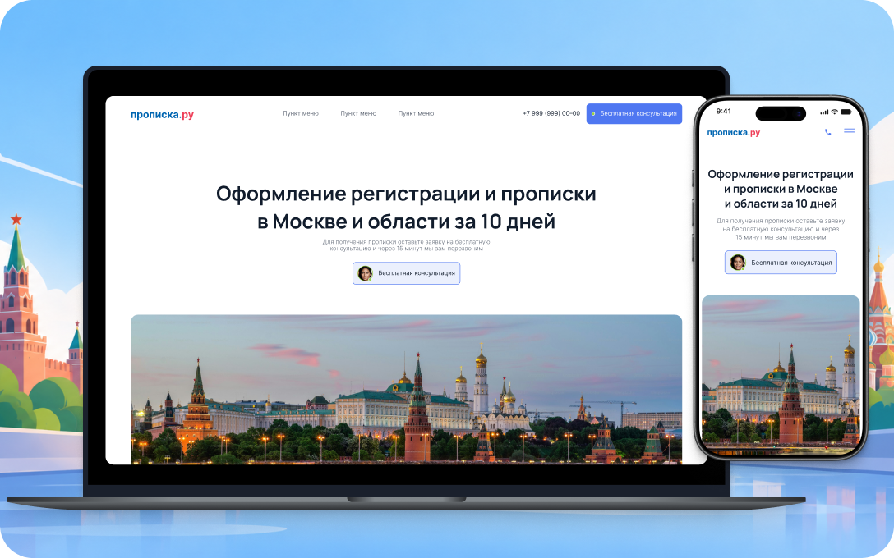

Гидус — персональный ИИ-гид по городу
Разработка сценариев голосового ассистента, который составляет маршруты по запросу, подбирает места и сопровождает пользователя во время прогулки.


Проектирую интерфейсы мобильных приложений
и анализирую пользовательский опыт с
продуктом
Разработка сценариев голосового ассистента, который составляет маршруты по запросу, подбирает места и сопровождает пользователя во время прогулки.

Спроектировал для распределения доходов между накопительными счетами по заданным стратегиям и отслеживания личных финансов.

Проектирование структуры, пользовательских сценариев и интерфейсов для лендингов и многостраничных сайтов.

Я Амин, продуктовый дизайнер. Делаю цифровые продукты, мобильные приложения, и веб-сервисы.
В работе особое внимание уделяю исследованию пользовательских потребностей и взаимодействию с продуктом.
Вне работы веду активный образ жизни. Пять лет занимался волейболом, также увлекаюсь футболом и баскетболом. Люблю командные виды спорта, где важны взаимодействие, дисциплина и общий результат:)
Люблю коммуницировать с людьми и смотреть на жизнь с разных точек зрения. Могу общаться с разными людьми и находить общие темы для разговора.